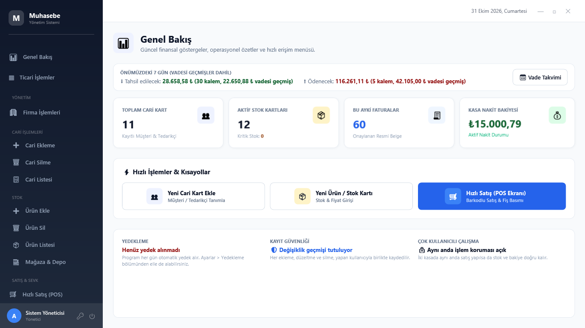
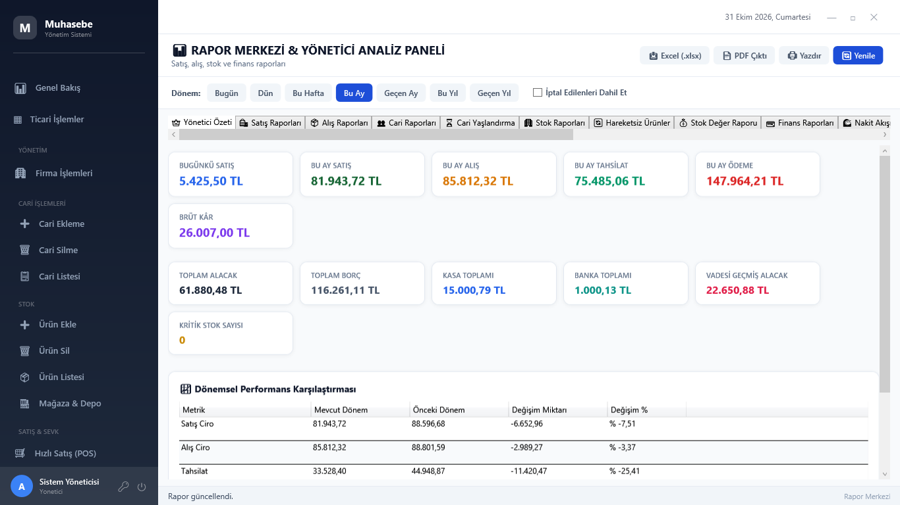
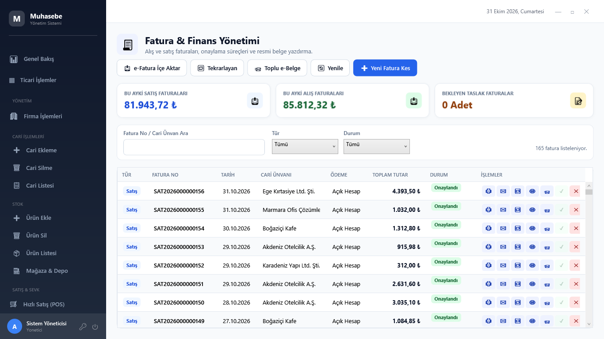
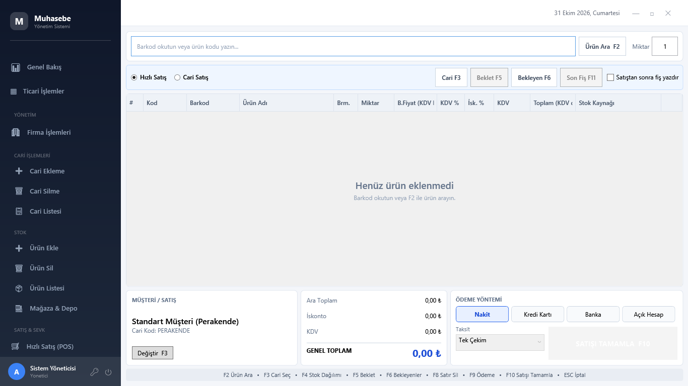
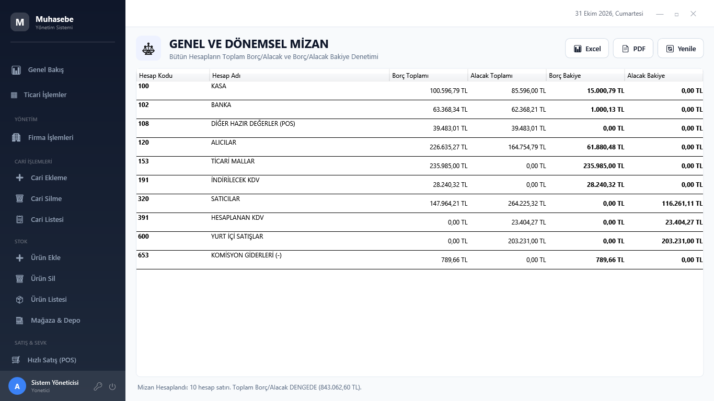

Ne yapar?
🧾 Fatura ve e-Belge
Satış, alış ve iade faturaları; e-Fatura, e-Arşiv ve e-İrsaliye entegratöre programdan tek tıkla gider. Onaylanınca otomatik gönderim, resmî PDF, gelen faturaları içeri alma.
👥 Cari hesaplar
Vergi numarasını yazın, ünvan ve adres GİB'den gelsin. Hesap ekstresi, mutabakat mektubu, vade hatırlatma e-postası, yaşlandırma.
📦 Stok ve depo
Çoklu depo, transfer, sayım, barkodlu raf etiketi, kritik stok uyarısı, hareketli ortalama maliyet ve kârlılık.
🛒 Hızlı satış (POS)
Barkodla hızlı satış, nakit / kart / veresiye, 80 mm fiş, bekleyen satışlar.
🏦 Kasa, banka, çek-senet
Dövizli kasa ve banka, POS bloke takibi, banka ekstresini Excel'den aktarma ve otomatik eşleştirme, çek/senet portföyü.
📒 Genel muhasebe
Her işlem yevmiyeye kendiliğinden işlenir. Mizan, büyük defter, bilanço, gelir tablosu, KDV mahsubu, amortisman, yıl sonu kapanışı.
👔 Personel ve maaş
Personel kartları, aylık maaş tahakkuku, avans, maaş ve vergi / SGK ödemeleri, maaş pusulası.
📊 Raporlar
Yönetici özeti, satış/alış/kâr, nakit akışı, BA-BS formları, KDV raporu, vade takvimi — Excel ve PDF çıktısı.
Ekranlar





Neden bu program?
- Verileriniz kendi bilgisayarınızda; aylık bulut ücreti yok, internet kesilse de çalışır.
- Her gün otomatik yedek, ikinci konuma (harici disk / bulut klasörü) kopya, tek tıkla geri yükleme.
- Kullanıcı bazında yetki ve tüm değişikliklerin kaydı.
- Ağ üzerinden birden fazla bilgisayar aynı verilerle çalışır.
- e-Fatura entegrasyonu hazır (Uyumsoft); diğer entegratörler için GİB standardında XML.
- KVKK: kişisel veri dökümü ve süresi dolan kayıtları anonimleştirme.
- Eski programınızdaki cari ve ürünler Excel'den aktarılır.
- Türkçe kullanım kılavuzu (F1) ve tek tıkla destek dosyası.
Sistem gereksinimleri
- Windows 10 veya 11 (64 bit), en az 4 GB RAM, 2 GB boş disk
- Ek program gerekmez: veritabanı kurulumla birlikte gelir
- e-Fatura için özel entegratör sözleşmesi (Uyumsoft ya da GİB XML'ini kabul eden herhangi bir entegratör)